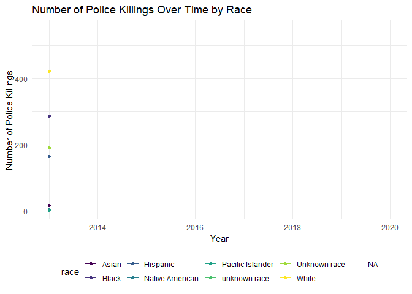

Analysis of Police Violence in the US
Total Number of People Killed by Police by Department
mpv_df %>%
count(police_dept) %>%
rename(total_killed_pd = n) %>%
filter(total_killed_pd >= 49) %>%
mutate(
police_dept = factor(police_dept),
police_dept = fct_reorder(police_dept, total_killed_pd)
) %>%
plot_ly(
y = ~total_killed_pd, x = ~police_dept, color = ~police_dept,
type = "bar", colors = "viridis")The plots below visualize police killings by state. One includes all states with data, the other includes the top 10 states.
state_plot =
mpv_df %>%
count(state) %>%
rename(total_killed_st = n) %>%
arrange(desc(total_killed_st)) %>%
mutate(
state = factor(state),
state = fct_reorder(state, total_killed_st)
) %>%
ggplot(aes(x = state, y = total_killed_st, fill = state)) +
geom_col() +
theme(axis.text.x = element_text(angle = 90, vjust = 0.5, hjust = 1))
state_subset_plot =
mpv_df %>%
count(state) %>%
rename(total_killed_st = n) %>%
arrange(desc(total_killed_st)) %>%
filter(total_killed_st >= 230) %>%
mutate(
state = factor(state),
state = fct_reorder(state, total_killed_st)
) %>%
ggplot(aes(x = state, y = total_killed_st, fill = state)) +
geom_col() +
theme(axis.text.x = element_text(angle = 90, vjust = 0.5, hjust = 1))
state_plot + state_subset_plot
The plot below shows police killings over time until 2019 (I excluded 2020, because otherwise it looks like 2020 has a drop in police killings).
year_plot =
mpv_df %>%
count(year) %>%
rename(total_killed = n) %>%
filter(year < 2020) %>%
ggplot(aes(x = year, y = total_killed)) + geom_point() +
geom_smooth(method = lm, se = FALSE) +
scale_y_continuous(limit = c(0, 1400))
year_plot## `geom_smooth()` using formula 'y ~ x'
Breakdown of charges laid against police
mpv_case =
mpv_df %>%
count(criminal_charges) %>%
mutate(
charges = case_when(
startsWith(criminal_charges, "Charged") ~ "Yes",
startsWith(criminal_charges, "No") ~ "No",
)) %>%
ggplot(aes(x = charges, y = n, color = charges, fill = charges)) +
geom_col() +
labs(
x = "Charges Brought Up Against Police" ,
y = "Total"
) +
theme(legend.title = element_blank())
mpv_case The above plot shows the breakdown of whether charges were pressed police after each case. In total, 8420charges were brought up against police, compared to the 69 cases where police were not charged.
The above plot shows the breakdown of whether charges were pressed police after each case. In total, 8420charges were brought up against police, compared to the 69 cases where police were not charged.
Scatter plot showing killings over time separated by race
anim_scatter =
mpv_df %>%
group_by(year, race) %>%
count() %>%
ggplot(aes(x = year, y = n, color = race)) +
geom_line() +
geom_point() +
labs(title = "Number of Police Killings Over Time by Race",
x = "Year",
y = "Number of Police Killings") +
transition_reveal(year)
animate(anim_scatter, renderer = gifski_renderer())
# might be worth excluding 2020 because of incomplete data, it makes it look like the shootings are trending down